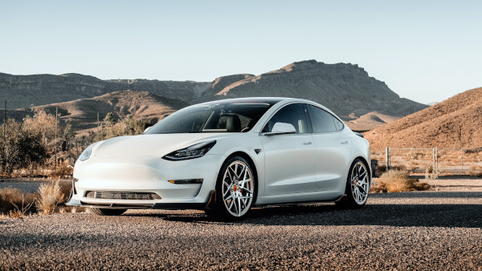
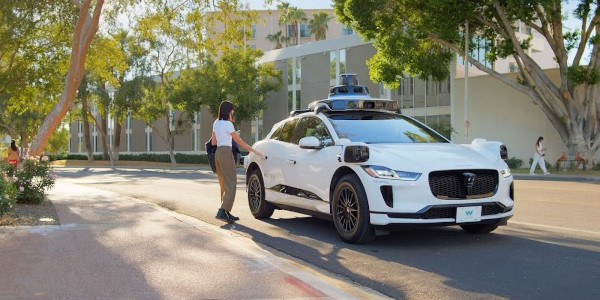
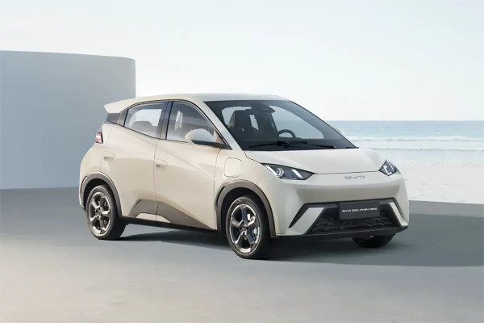

Tesla, Waymo e BYD: Afinal, quem está na liderança?
A corrida pela condução autônoma deixou de ser uma promessa de ficção científica para se tornar uma batalha comercial de trilhões de dólares. No centro dessa disputa, três gigantes adotaram estratégias completamente opostas para alcançar o mesmo objetivo: tirar o ser humano do volante. Mas quem realmente está ganhando essa corrida?
Tesla: A Força dos Dados e da Visão Computacional
A empresa de Elon Musk construiu sua estratégia com base na escala. A Tesla defende que o futuro da autonomia depende exclusivamente de visão computacional, utilizando apenas câmeras de alta resolução e inteligência artificial avançada, dispensando totalmente o uso de radares a laser (LiDAR).
Sua grande vantagem é o "aprendizado coletivo": cada quilômetro rodado por qualquer veículo da marca no mundo alimenta o treinamento contínuo do seu sistema, o Full Self-Driving (FSD). Embora seu sistema ainda exija supervisão do motorista na maior parte do mundo, a Tesla possui a maior base de dados reais de trânsito do planeta, apostando que seus algoritmos logo superarão a percepção humana.

Waymo: A Pioneira Absoluta do Robotáxi
Se a corrida for medida por veículos rodando 100% sozinhos sem ninguém ao volante, a coroa pertence à Waymo (subsidiária da Alphabet/Google). Enquanto outras empresas prometem o futuro, a Waymo já vive ele hoje operando o Waymo One, um serviço comercial de robotáxis para o público.
A estratégia deles é meticulosa e focada em segurança máxima. O sistema Waymo Driver (Nível 4 de autonomia) utiliza uma combinação pesada de sensores: câmeras 360°, radar convencional e os potentes sensores LiDAR de longa distância. Com mais de 30 milhões de quilômetros rodados de forma totalmente autônoma em ruas públicas, a Waymo possui uma maturidade tecnológica e regulatória que levaria anos para os concorrentes alcançarem.

BYD: A Democratização Chinesa e a Velocidade de Hardware
Se a Tesla e a Waymo eram as grandes potências do Ocidente, a BYD chegou para dominar o Oriente. A montadora chinesa, que já ultrapassou a Tesla como a maior vendedora de carros elétricos do mundo, entrou de cabeça na corrida autônoma.
A estratégia da BYD é baratear a tecnologia de ponta. Diferente da Tesla, a BYD está abraçando o LiDAR e o combinando com seu novo sistema de inteligência artificial "Olho de Deus" (God's Eye) e seu chip ultrarrápido Xuanji A3 de 4 nanômetros. Ao colocar esses sistemas avançados como padrão em seus carros (mesmo nos modelos mais acessíveis), a BYD está rapidamente construindo uma frota de milhões de veículos capazes de atingir autonomia de Nível 3 e Nível 4 em vias urbanas.

O Veredito
A resposta para quem está liderando depende do que você considera a "linha de chegada":
- Se a liderança é medida por operação comercial sem motorista hoje, a Waymo é a vencedora incontestável.
- Se a liderança é medida por volume de dados globais e adoção em massa, a Tesla continua na frente graças à sua legião de motoristas alimentando sua IA.
- Porém, se a liderança for decidida por quem conseguirá entregar hardware autônomo completo pelo menor preço para o mercado global, a BYD é a ameaça mais silenciosa e veloz da atualidade.